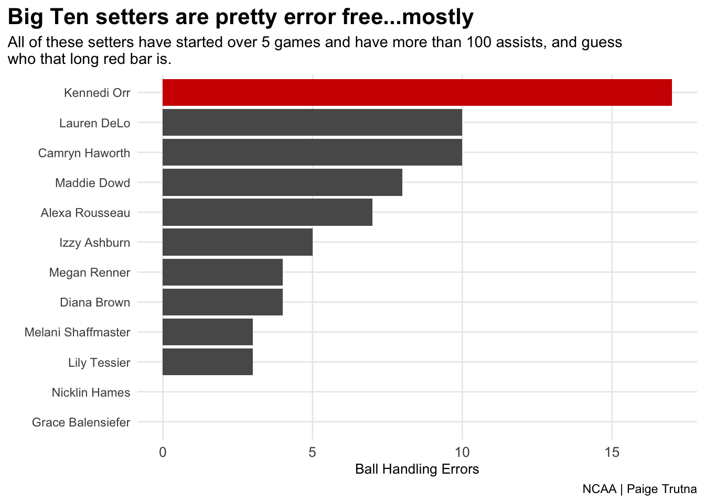
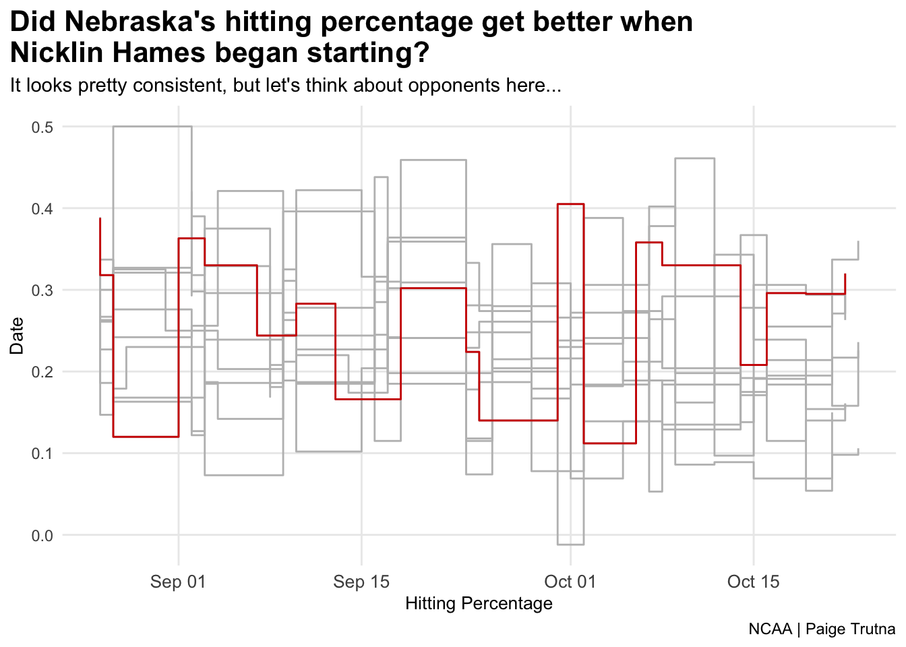

Rows: 7383 Columns: 36
── Column specification ────────────────────────────────────────────────────────
Delimiter: ","
chr (4): team, opponent, home_away, result
dbl (31): team_score, opponent_score, s, kills, errors, total_attacks, hit_...
date (1): date
ℹ Use `spec()` to retrieve the full column specification for this data.
ℹ Specify the column types or set `show_col_types = FALSE` to quiet this message.
Rows: 5379 Columns: 32
── Column specification ────────────────────────────────────────────────────────
Delimiter: ","
chr (7): team, full_name, roster_name, last_name, first_name, yr, pos
dbl (23): season, jersey, feet, inches, gp, gs, mp, s, kills, errors, total_...
lgl (2): ms, total_blocks
ℹ Use `spec()` to retrieve the full column specification for this data.
ℹ Specify the column types or set `show_col_types = FALSE` to quiet this message.
NEW DATA SETS/FILTERING
Code
bigten <- playerstats %>%filter (team =="Nebraska Cornhuskers"| team =="Iowa Hawkeyes"| team =="Penn State Nittany Lions"| team =="Michigan Wolverines"| team =="Michigan State Spartans"| team =="Purdue Boilermakers"| team =="Wisconsin Badgers"| team =="Maryland Terrapins"| team =="Rutgers Scarlet Knights"| team =="Ohio State Buckeyes"| team =="Indiana Hoosiers"| team =="Illinois Fighting Illini"| team =="Minnesota Golden Gophers"| team =="Northwestern Wildcats")setters <- playerstats %>%filter(pos =="S") %>%filter(gs >5) %>%filter(assists >100)bigsetters <- setters %>%filter(team =="Nebraska Cornhuskers"| team =="Iowa Hawkeyes"| team =="Penn State Nittany Lions"| team =="Michigan Wolverines"| team =="Michigan State Spartans"| team =="Purdue Boilermakers"| team =="Wisconsin Badgers"| team =="Maryland Terrapins"| team =="Rutgers Scarlet Knights"| team =="Ohio State Buckeyes"| team =="Indiana Hoosiers"| team =="Illinois Fighting Illini"| team =="Minnesota Golden Gophers"| team =="Northwestern Wildcats") %>%filter(gs >5) %>%filter(assists >100)huskerplayers <- playerstats %>%filter(team =="Nebraska Cornhuskers")nebraska <- matchstats %>%filter(team =="Nebraska Cornhuskers")bigtenmatches <- matchstats %>%filter(team =="Nebraska Cornhuskers"| team =="Iowa Hawkeyes"| team =="Penn State Nittany Lions"| team =="Michigan Wolverines"| team =="Michigan State Spartans"| team =="Purdue Boilermakers"| team =="Wisconsin Badgers"| team =="Maryland Terrapins"| team =="Rutgers Scarlet Knights"| team =="Ohio State Buckeyes"| team =="Indiana Hoosiers"| team =="Illinois Fighting Illini"| team =="Minnesota Golden Gophers"| team =="Northwestern Wildcats")huskeropponents <- matchstats %>%filter(opponent =="Nebraska")
Code
playerstats %>%filter(full_name =="Kennedi Orr")
# A tibble: 1 × 32
team season jersey full_…¹ roste…² last_…³ first…⁴ yr pos feet inches
<chr> <dbl> <dbl> <chr> <chr> <chr> <chr> <chr> <chr> <dbl> <dbl>
1 Nebras… 2022 9 Kenned… Orr, K… Orr Kennedi So S 6 0
# … with 21 more variables: gp <dbl>, gs <dbl>, mp <dbl>, s <dbl>, ms <lgl>,
# kills <dbl>, errors <dbl>, total_attacks <dbl>, hit_pct <dbl>,
# assists <dbl>, aces <dbl>, s_err <dbl>, digs <dbl>, r_err <dbl>,
# block_solos <dbl>, block_assists <dbl>, b_err <dbl>, total_blocks <lgl>,
# pts <dbl>, bhe <dbl>, trpl_dbl <dbl>, and abbreviated variable names
# ¹full_name, ²roster_name, ³last_name, ⁴first_name
ggplot() +geom_bar(data=bigsetters, aes(x=reorder(full_name, bhe), weight=bhe)) +geom_bar(data=orr, aes(x=full_name, weight=bhe), fill ="#D00000") +coord_flip() +labs(title ="Big Ten setters are pretty error free...mostly",subtitle ="All of these setters have started over 5 games and have more than 100 assists, and guess \nwho that long red bar is.",x ="",y ="Ball Handling Errors",caption ="NCAA | Paige Trutna" ) +theme_minimal() +theme(plot.title =element_text(size =16, face ="bold"),axis.title =element_text(size =10), plot.subtitle =element_text(size=11), panel.grid.minor =element_blank(),axis.text.x =element_text(size =10),plot.title.position ="plot" )

STEP CHART
Code
ggplot() +geom_step(data=bigtenmatches, aes(x=date, y=hit_pct, group=team), color ="grey") +geom_step(data=nebraska, aes(x=date, y=hit_pct, group=team), color ="#d00000") +theme_minimal() +labs(title ="Did Nebraska's hitting percentage get better when \nNicklin Hames began starting?",subtitle ="It looks pretty consistent, but let's think about opponents here...",x ="Hitting Percentage",y ="Date",caption ="NCAA | Paige Trutna" ) +theme(plot.title =element_text(size =16, face ="bold"),axis.title =element_text(size =10), plot.subtitle =element_text(size=11), panel.grid.minor =element_blank(),axis.text.x =element_text(size =10),plot.title.position ="plot" )

SCATTERPLOT
Code
ggplot() +geom_point(data=setters, aes(x=assists, y=bhe), color ="grey") +geom_smooth(data=setters, aes(x=assists, y=bhe), method="lm", se=FALSE) +geom_point(data=orr, aes(x=assists, y=bhe, label=full_name), color ="#d00000", size =4) +geom_smooth(data=orr, aes(x=assists, y=bhe), method="lm", se=FALSE) +labs(title ="How does Kennedi Orr stack up against NCAA \nSetters in terms of assists:errors ratio?",subtitle ="Once again, all of these setters have started over 5 games and have over 100 assists, \nand Kennedi Orr is on the left, with not as many assists and quite a few errors.\n(The blue line is the average)",x ="Assists",y ="Ball Handling Errors",caption ="NCAA | Paige Trutna" ) +theme_minimal() +theme(plot.title =element_text(size =16, face ="bold"),axis.title =element_text(size =10), plot.subtitle =element_text(size=10.5), panel.grid.minor =element_blank(),axis.text.x =element_text(size =10),plot.title.position ="plot" )
Warning: Ignoring unknown aesthetics: label
`geom_smooth()` using formula 'y ~ x'
`geom_smooth()` using formula 'y ~ x'